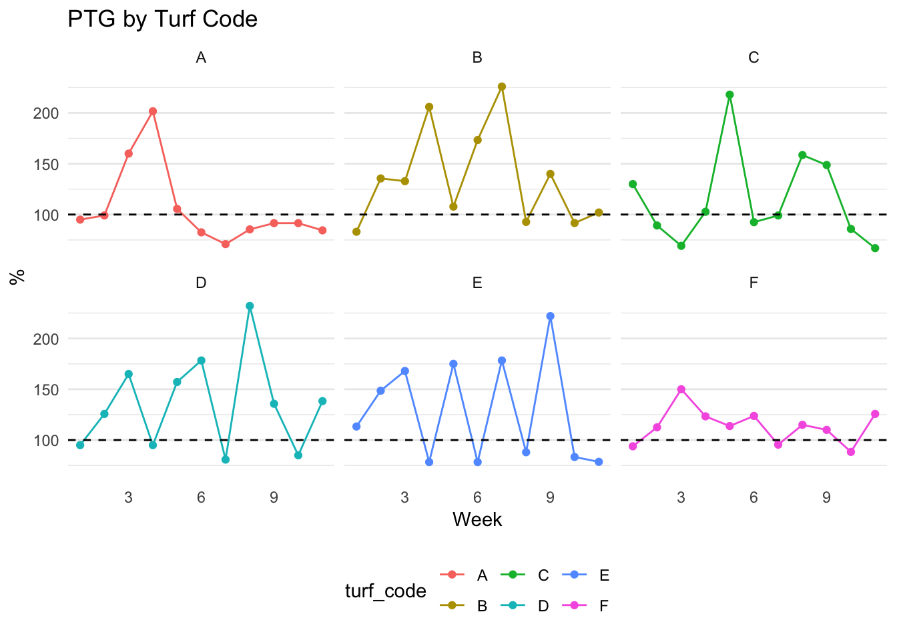
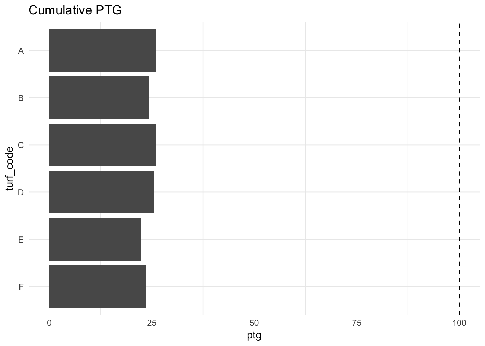

Chapter 2 calculating PTG
Goal: Demonstrate how to take raw canvassing data and calculate a PTG.
This writing assumes that the reader has at least a basic understanding of R and the tidyverse—particularly dplyr and ggplot2.
Overview:
- reading in data
- aggregating
- joining tables
One of the most important metrics to a field program is the percent to goal (PTG). Field staff have a target number of pledge cards or doors to knock on. It is important for the data manger to provide a reliant and robust PTG reporting system to enable organizing directors to make informed and data driven decisions.
In this exercise we will use three datasets (located in the data folder).
canvassing_results.csv: canvassing results from January to Marchvan_turf_lookup.csv: dataset containing the region codes for each van usergoals.csv: dataset containing the weekly pledge card goal
Steps:
- read in canvassing results
- read in turf code look up table
- create new week variable
- aggregate on the weekly level
- read in goal and calculate PTG
library(tidyverse)
library(lubridate)
canvass <- read_csv("data/canvassing_results.csv")## Parsed with column specification:
## cols(
## van_id = col_double(),
## date = col_date(format = ""),
## vol_yes = col_double()
## )canvass## # A tibble: 6,671 x 3
## van_id date vol_yes
## <dbl> <date> <dbl>
## 1 1 2019-03-15 1
## 2 2 2019-01-30 1
## 3 3 2019-02-27 0
## 4 4 2019-02-21 0
## 5 5 2019-01-13 0
## 6 6 2019-01-29 0
## 7 7 2019-01-07 0
## 8 8 2019-02-15 0
## 9 9 2019-01-30 0
## 10 10 2019-03-06 0
## # … with 6,661 more rowsI always briefly inspect my data using the count() function. Let’s count the number of individuals who marked volunteer yes.
count(canvass, vol_yes)## # A tibble: 2 x 2
## vol_yes n
## <dbl> <int>
## 1 0 4617
## 2 1 2054That is a lot of volunteers! They will go into the volunter recruitment and management pipeline and hopefully convert into some volunteer shifts. But which region are these potential volunteers in? To figure this out we will have to read in the van_turf_lookup.csv dataset.
turf_lookup <- read_csv("data/van_turf_lookup.csv")## Parsed with column specification:
## cols(
## van_id = col_double(),
## turf_code = col_character()
## )turf_lookup ## # A tibble: 6,004 x 2
## van_id turf_code
## <dbl> <chr>
## 1 1 B
## 2 2 E
## 3 3 E
## 4 4 B
## 5 5 C
## 6 6 E
## 7 7 B
## 8 8 C
## 9 9 D
## 10 10 A
## # … with 5,994 more rowsHere we see that there are only two variables, van_id, and turf_code. This is a very common structure in relational data architectures. Because this table and the canvass table both share the van_id column we can merge the who based on this. This is referred to as a “common identifier”. The operation of joining two tables together is called a join.
For more on joins and relational data please read chapter 13 of R for Data Science by Hadley Wickham.
left_join(canvass, turf_lookup, by = "van_id") ## # A tibble: 6,671 x 4
## van_id date vol_yes turf_code
## <dbl> <date> <dbl> <chr>
## 1 1 2019-03-15 1 B
## 2 2 2019-01-30 1 E
## 3 3 2019-02-27 0 E
## 4 4 2019-02-21 0 B
## 5 5 2019-01-13 0 C
## 6 6 2019-01-29 0 E
## 7 7 2019-01-07 0 B
## 8 8 2019-02-15 0 C
## 9 9 2019-01-30 0 D
## 10 10 2019-03-06 0 A
## # … with 6,661 more rowsThis code node provides the turf codes for each van_id, but we still do not have the week that each observation belongs to.We are interested in the weekly pledge card goal so it is important to extract the calendar week from the date field. We will use the function lubridate::week() to do this.
We will pipe the resultant table from the join into a mutate call where we will create this new variable and save it to an object called canvass_clean.
canvass_clean <- left_join(canvass, turf_lookup, by = "van_id") %>%
mutate(week = week(date))
canvass_clean## # A tibble: 6,671 x 5
## van_id date vol_yes turf_code week
## <dbl> <date> <dbl> <chr> <dbl>
## 1 1 2019-03-15 1 B 11
## 2 2 2019-01-30 1 E 5
## 3 3 2019-02-27 0 E 9
## 4 4 2019-02-21 0 B 8
## 5 5 2019-01-13 0 C 2
## 6 6 2019-01-29 0 E 5
## 7 7 2019-01-07 0 B 1
## 8 8 2019-02-15 0 C 7
## 9 9 2019-01-30 0 D 5
## 10 10 2019-03-06 0 A 10
## # … with 6,661 more rowsWe can use count() again to explore the pledge cards by region and week. We can add unquoted column names as arguments to count() which will be used to group the data.
count(canvass_clean, turf_code)## # A tibble: 6 x 2
## turf_code n
## <chr> <int>
## 1 A 1137
## 2 B 1101
## 3 C 1159
## 4 D 1114
## 5 E 1044
## 6 F 1116count(canvass_clean, week)## # A tibble: 11 x 2
## week n
## <dbl> <int>
## 1 1 651
## 2 2 629
## 3 3 552
## 4 4 637
## 5 5 607
## 6 6 614
## 7 7 617
## 8 8 643
## 9 9 641
## 10 10 640
## 11 11 440count(canvass_clean, turf_code, week)## # A tibble: 66 x 3
## turf_code week n
## <chr> <dbl> <int>
## 1 A 1 114
## 2 A 2 109
## 3 A 3 96
## 4 A 4 121
## 5 A 5 95
## 6 A 6 99
## 7 A 7 78
## 8 A 8 111
## 9 A 9 119
## 10 A 10 119
## # … with 56 more rowsThough these counts (you may be more familiar with the phrase cross-tabs) are extremely useful, we still want to know the number of volunteers pledged. For more control over the aggregate measures, we will use dplyr::group_by() and dplyr::summarise() (for more see chapter 5.6 in R for Data Science).
We will create a new table called weekly_canvass which is grouped by turf code and week. This table will have a column for turf_code, week, the number of people pledged to vote n_pledged, and the number of people who indicated they would volunteer vol_yes.
weekly_canvass <- canvass_clean %>%
group_by(turf_code, week) %>%
summarise(n_pledged = n(),
vol_yes = sum(vol_yes))
weekly_canvass## # A tibble: 66 x 4
## # Groups: turf_code [6]
## turf_code week n_pledged vol_yes
## <chr> <dbl> <int> <dbl>
## 1 A 1 114 41
## 2 A 2 109 28
## 3 A 3 96 33
## 4 A 4 121 34
## 5 A 5 95 32
## 6 A 6 99 29
## 7 A 7 78 28
## 8 A 8 111 29
## 9 A 9 119 34
## 10 A 10 119 27
## # … with 56 more rowsNow that we have our counts of pledges and volunteers by week and turf code we need to compare this to their weekly goal. The weekly goals are in goals.csv.
goals <- read_csv("data/goals.csv")## Parsed with column specification:
## cols(
## week = col_double(),
## region = col_character(),
## goal = col_double()
## )goals## # A tibble: 312 x 3
## week region goal
## <dbl> <chr> <dbl>
## 1 1 A 120
## 2 1 B 130
## 3 1 C 70
## 4 1 D 120
## 5 1 E 90
## 6 1 F 130
## 7 2 A 110
## 8 2 B 90
## 9 2 C 130
## 10 2 D 70
## # … with 302 more rowsAgain, this data will need to be joined. What is unique here though is that there is not a single common identifier column. We will need to join on two columns. Namely, region (turf code), and week. Notice that we have mismatched names. To perform a join in this scenario we will need to provide a named vector to the by argument (more on named vectors in chapter 20.4.4 in R for Data Science). The name of the vector element is the column name in the left hand table and the value is the name of the column in the right hand table.
In our case, the left hand table is weekly_canvass which has the column name turf_code. The right hand table is goals which has the column name region. To match on this we have to provide the named vector c("turf_code" = "region). Since the second column we are matching on is week which is present in both tables, this element does not have to be named. Thus the vector we will use is c("turf_code" = "region", "week").
left_join(weekly_canvass, goals, by = c("turf_code" = "region", "week"))## # A tibble: 66 x 5
## # Groups: turf_code [6]
## turf_code week n_pledged vol_yes goal
## <chr> <dbl> <int> <dbl> <dbl>
## 1 A 1 114 41 120
## 2 A 2 109 28 110
## 3 A 3 96 33 60
## 4 A 4 121 34 60
## 5 A 5 95 32 90
## 6 A 6 99 29 120
## 7 A 7 78 28 110
## 8 A 8 111 29 130
## 9 A 9 119 34 130
## 10 A 10 119 27 130
## # … with 56 more rowsWith this join we see that we have the goal and the actual number pledged. We’re one step away from calculating the PTG! To calculate the percent we need to divide the actual number by the goal and multiply by 100. We will do this within a mutate call after we join and save this to a new object ptg.
ptg <- left_join(weekly_canvass, goals, by = c("turf_code" = "region", "week")) %>%
mutate(ptg = (n_pledged / goal) * 100)
ptg## # A tibble: 66 x 6
## # Groups: turf_code [6]
## turf_code week n_pledged vol_yes goal ptg
## <chr> <dbl> <int> <dbl> <dbl> <dbl>
## 1 A 1 114 41 120 95
## 2 A 2 109 28 110 99.1
## 3 A 3 96 33 60 160
## 4 A 4 121 34 60 202.
## 5 A 5 95 32 90 106.
## 6 A 6 99 29 120 82.5
## 7 A 7 78 28 110 70.9
## 8 A 8 111 29 130 85.4
## 9 A 9 119 34 130 91.5
## 10 A 10 119 27 130 91.5
## # … with 56 more rowsptg %>%
ggplot(aes(week, ptg, color = turf_code)) +
geom_point() +
geom_line() +
theme_minimal() +
facet_wrap(~turf_code) +
geom_hline(yintercept = 100, lty = 2) +
theme(
panel.grid.major.x = element_blank(),
panel.grid.minor.x = element_blank(),
legend.position = "bottom"
) +
labs(title = "PTG by Turf Code",
x = "Week", y = "%")
While having a table and chart for weekly PTG is extremely useful, it is important to provide a PTG metric for the entire program.
To do this we will need to calculate an aggregate measure from the goals table and join this to an aggregated canvass table. We will start by aggregating the goals and creating a total_goals object. Note that in the code chunk below I rename the region column in the group_by() statement this will be useful in the future so we can avoid having to use a named vector in our join.
total_goals <- goals %>%
group_by(turf_code = region) %>%
summarise(goal = sum(goal))
total_goals## # A tibble: 6 x 2
## turf_code goal
## <chr> <dbl>
## 1 A 4390
## 2 B 4530
## 3 C 4470
## 4 D 4350
## 5 E 4640
## 6 F 4720Now that we have total_goals we need to know the total number of pledges each region has gathered. We will use the existing canvass_clean object and count the total number or pledges using count().
total_pledges <- count(canvass_clean, turf_code)
total_pledges## # A tibble: 6 x 2
## turf_code n
## <chr> <int>
## 1 A 1137
## 2 B 1101
## 3 C 1159
## 4 D 1114
## 5 E 1044
## 6 F 1116Now we can join these two tables together and calculate a program wide PTG.
total_ptg <- inner_join(total_pledges, total_goals, by = "turf_code") %>%
mutate(ptg = n / goal * 100)
total_ptg## # A tibble: 6 x 4
## turf_code n goal ptg
## <chr> <int> <dbl> <dbl>
## 1 A 1137 4390 25.9
## 2 B 1101 4530 24.3
## 3 C 1159 4470 25.9
## 4 D 1114 4350 25.6
## 5 E 1044 4640 22.5
## 6 F 1116 4720 23.6Everyone loves a bar chart to visually understand their data.
total_ptg %>%
mutate(turf_code = fct_rev(turf_code)) %>%
ggplot(aes(turf_code, ptg)) +
geom_col() +
geom_hline(yintercept = 100, lty = 2) +
coord_flip() +
labs(title = "Cumulative PTG") +
theme_minimal() +
theme(
panel.grid.major.x = element_blank()
) 
To Do:
- Turn into a report
- turn into parameterized report
- emailing with gmailr
- hosting and scheduling with connect